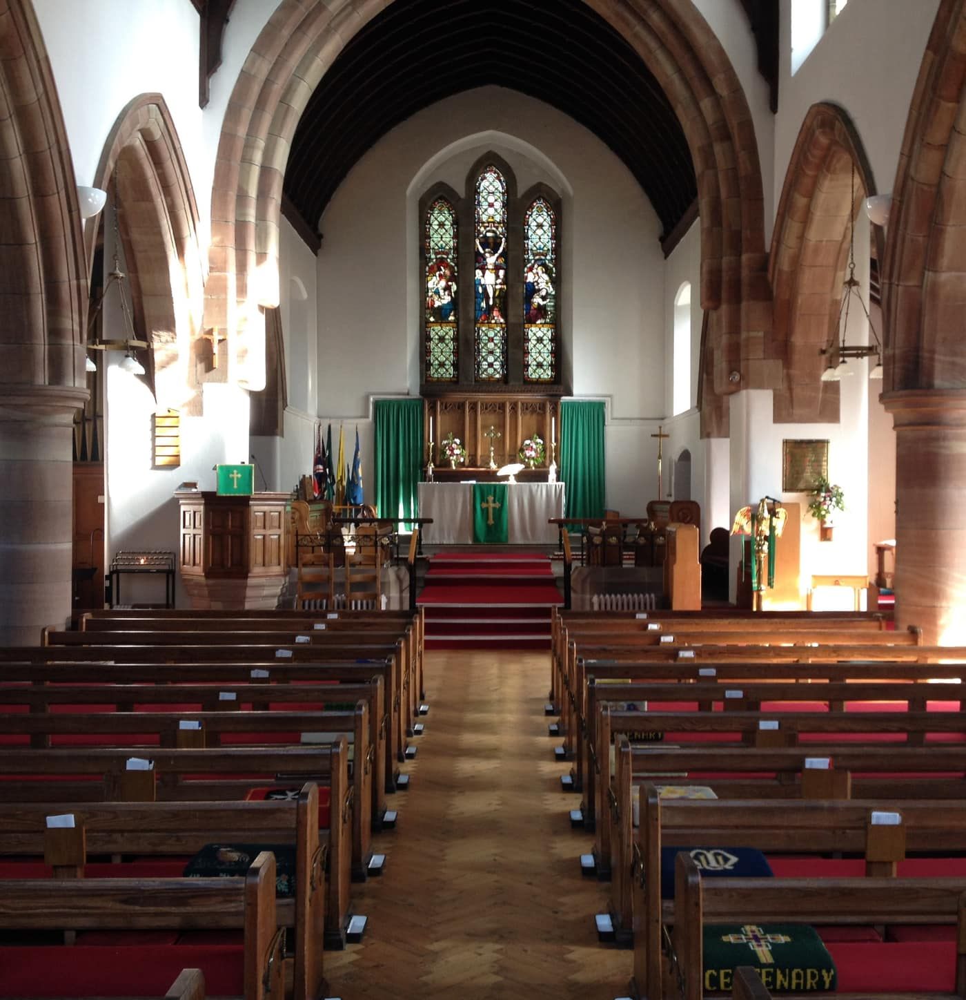

Website
St Paul's Churchyard in Bloom
Pictures of St Paul's churchyard with the crocus on full display
Website
Pictures of St Paul's churchyard with the crocus on full display
Church Events
Our graveyard has now been recognised by the Commonwealth War Graves Commission

Other Events
Update on the completion of the church roof works